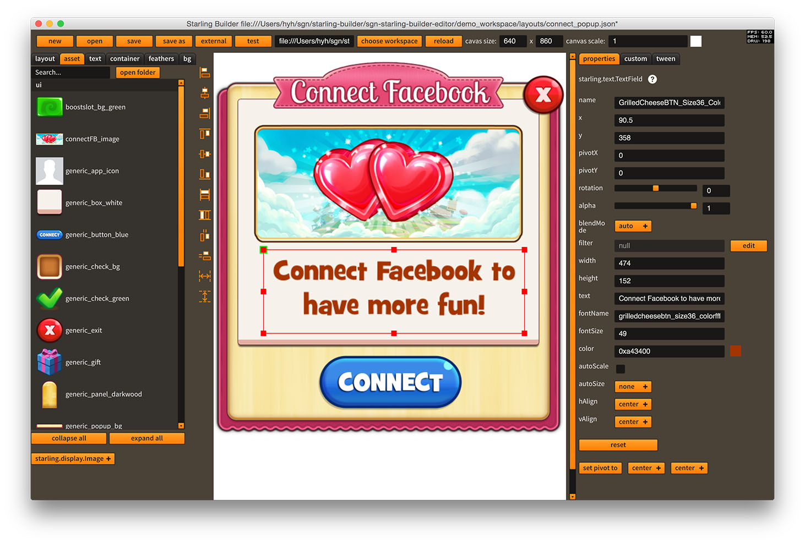

Starling Builder
Open Source User Interface Editor for Starling Framework

Download
Version
Editor
Demo Workspace
Starling 1.x
Starling Builder v0.8.4
demo_workspace.zip
Starling 2.x
Starling Builder v2.0.2
demo_workspace.zip
Demo
http://starlingbuilder.github.io/demo/demo_web.html
Documentation
http://wiki.starling-framework.org/builder/start
API Reference
http://starlingbuilder.github.io/api/index.html